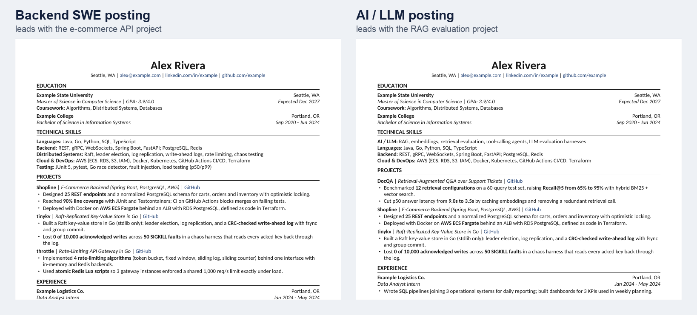
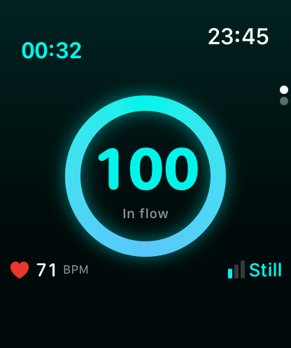
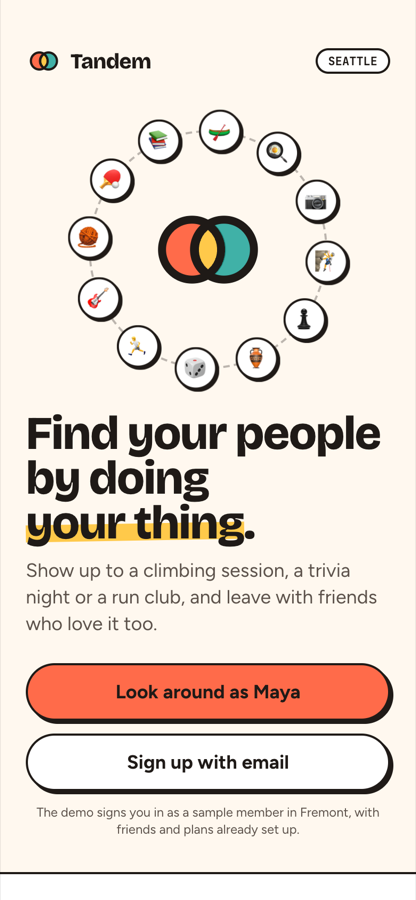

0
acked writes lost, 75 leader kills
Jiaju Zhang · Portfolio 2026
Built from scratch. Measured. Live on the web.
Live demos. Backend projects open as animated one-page reports; every number links to the file in its repo.
Featured · Live demo
AI resume tailoring that never invents a fact, checked by blind HM and ATS reviewers. Replays of real runs.

01 · Systems
Replication, consensus, search, SQL and rate limiting. The big number on each tile is the headline result from its report.
0
acked writes lost, 75 leader kills
0
acked records lost, of 9,634,000
0
acked writes lost, of 20,007
10,000
allowed of 10,000 expected
11/11
TPC-H queries match DuckDB
02 · AI infrastructure
An inference engine, an agent sandbox on Kubernetes, self-improving harnesses, an MCP evaluation harness and a RAG platform.
13×
faster start: warm vs. cold
+3.75
held-out points, n = 10
377.2
tok/s, continuous, B=32
6 → 0
unauthorized DB writes in 72 runs
0.7382
SciFact nDCG@10 reproduced
Daily arXiv ingestion into a Rust hybrid search engine, cited answers through a FastAPI service, and a regression gate calibrated against measured LLM noise; every number measured on one laptop.
03 · Apps
Live demos and running apps. The ones on Google Cloud Run can take a few seconds to wake up.
100%
Recall@5, hard set (was 44%)
47
tests pass offline
Watch simulator

Running app

Running app
Seattle trip planner PWA with a 3D map.
Every report links each number to the file in its repo.